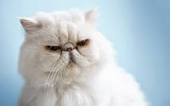
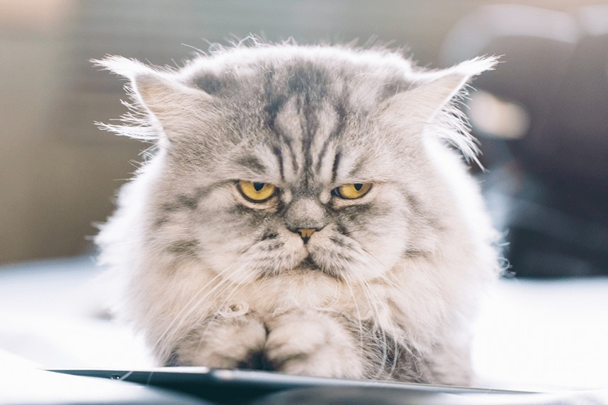

Kot Perski
Pers to jeden z najwcześniej rozpoznawalnych wśród ras kotów i poddanych selekcji pod katem ekstremalnego fenotypu. Chociaż protoplaści tej rasy pochodzili z terenów Persji to obecni przedstawiciele rasy nie wykazują genetycznych powiązań z tamtejszymi populacjami kotów.
Koty perskie mogą stanowić idealny przykład jak przy ukierunkowanej i rygorystycznej selekcji hodowlanej można zmienić wygląd zwierzęcia. Współczesne persy w niewielu kwestiach przypominają swoich przodków. Reprezentowane na wystawach już od 1871 roku koty tej rasy były smuklejsze i wyższe, miały krótszą i mniej obfitą szatę, dłuższe nosy i bardziej wklęsłe oczodoły. Przypominały bardziej tureckie angory aniżeli dzisiejszych przedstawicieli rasy.
Aktualnie przedstawiciele rasy to koty średniej i dużej wielkości, raczej krępe, ich standardowa masa ciała powinna mieścić się w przedziale od 3,5 - 4 kg do nawet 7 kg. Gęsta sierść na całym ciele, a zwłaszcza uformowana w widoczną kryzę i żabot, powoduje, że kot wydaje się znacznie większy. Głowa perska jest okrągła i szeroka, a uszy niewielkie z zaokrąglonymi końcówkami. Charakterystyczne dla rasy są duże, okrągłe oczy, płytko osadzone. Ich barwa zależna jest od umaszczenia.
W wyniku pracy hodowlanej powstało ponad 150 wersji kolorystycznej tej rasy, jednak do celów wystawowych istnieje podział na 5 kategorii: jednokolorowe – solid, dymne, pręgowane, bikolor, colorpoint.
Ogon persów jest krótki i nisko osadzony, ale z dużą ilością sierści. Łapy duże, zakończone okrągłymi stopami. Kępki włosów między palcami w zamierzchłych czasach stanowiły ochronę dla opuszek przed rozgrzanym piaskiem i zmianami temperatur.



Persy to spokojne i łagodne olbrzymy, które uwielbiają się bawić. Uznawane są za cichą rasę, która to nie ma w zwyczaju głośno miałczeć i dobitnie domagać się atencji opiekuna. Są bardzo uczuciowe, lubią pieszczoty i przytulanie się. Dosyć łatwo i szybko adaptują się do zmieniającego się otoczenia, jeżeli tylko są ze znanym, ukochanym opiekunem.
Przeciętny wiek kota wynosi od 12 do 17 lat.
Pierwszy kot perski Europie (a właściwie zwierzę w jego typie) został zaprezentowany w 1871 roku, w trakcie pierwszej wystawy kotów w londyńskim Pałacu Kryształowym, choć osobniki tej rasy pojawiły się w XVII wieku. Początkowo kot perski uznawany był za przedstawiciela jednej rasy wraz z angorą turecką. Jednak ostatecznie różnice pomiędzy nią a persem okazały się zbyt duże i podzielono je na dwa rodzaje.